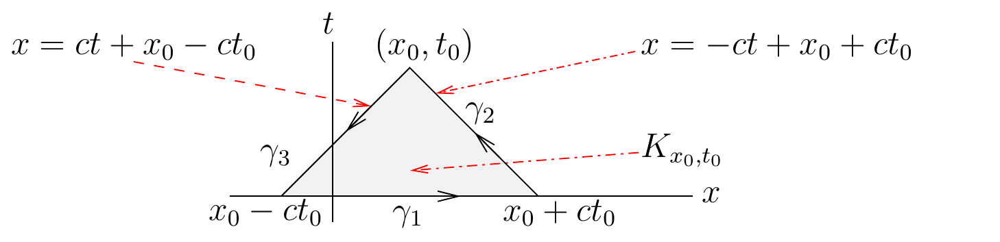

Batas sumber. Bagian ini mengikat
wave_equ.tex baris 390-600 pada sumber beku.
Persamaan Gelombang
Nonhomogen
Perhatikan persamaan gelombang nonhomogen
(7.2.1)
dengan syarat awal
(7.2.2)
Mulai sekarang, kita mengasumsikan bahwa
,
,
dan
cukup mulus.
Untuk mencari solusi persoalan ini, kita menggunakan rumus integral
Green
(7.2.3)
di mana
dan
adalah fungsi yang terdiferensialkan secara kontinu pada suatu himpunan
terbuka yang memuat
,
dan
merupakan batas berorientasi positif. Daerah
yang kita tinjau digambarkan pada Gambar 7.5.

Daerah determinasi segitiga karakteristik
K_(x_0,t_0) untuk persamaan gelombang nonhomogen.
di mana kita telah menggunakan rumus integral Green (7.2.3)
dengan
dan
,
serta
merupakan batas berorientasi positif dari
seperti yang digambarkan pada Gambar 7.5.
Pada
,
kita menggunakan representasi parametrik
untuk
sehingga diperoleh
karena
untuk
.
Pada
,
kita menggunakan representasi parametrik
untuk
sehingga diperoleh
karena
untuk
.
Pada
,
kita menggunakan representasi parametrik
untuk
sehingga diperoleh
karena
untuk
.
Dengan demikian,
Jika kita menyelesaikannya
untuk
,
maka kita memperoleh
Hasil ini menyarankan solusi
untuk (7.2.1)
dan (7.2.2),
di mana
merupakan solusi persamaan gelombang homogen (7.1.1)
dengan (7.1.2),
sedangkan
Untuk membuktikan bahwa
benar-benar merupakan solusi persamaan gelombang nonhomogen kita, kita
perlu membuktikan bahwa
memenuhi (7.2.1)
dengan syarat awal
dan
untuk
.
Untuk membuktikannya, kita perlu menggunakan Teorema Dasar Kalkulus
beberapa kali. Jelas bahwa
.
Kita juga memiliki
Pada Bagian 8.6 (rujukan ke bab mendatang), kita akan
memperkenalkan metode lain, yaitu prinsip Duhamel, untuk menyelesaikan
persamaan gelombang nonhomogen.
Contoh.
Selesaikan persamaan gelombang nonhomogen
dengan syarat awal
dan
untuk
.
Solusinya diberikan oleh
dengan
,
untuk semua
,
untuk semua
,
dan
.
Kita memperoleh
Catatan.
Untuk contoh sebelumnya, terdapat pendekatan yang lebih langsung
untuk menyelesaikan persamaan gelombang nonhomogen.
Mudah dilihat bahwa
merupakan solusi dari
dan
merupakan solusi dari
Oleh karena itu, solusi masalah nonhomogen pada contoh sebelumnya adalah
,
dengan
merupakan solusi persamaan gelombang homogen
dengan syarat awal
Kita memperoleh
Atribusi dan hak. Karya sumber oleh Benoit Dionne
dilisensikan berdasarkan Creative
Commons Attribution-NonCommercial-ShareAlike 4.0 International.
Terjemahan dan perubahan yang dicatat menggunakan lisensi komponen yang
sama. Produksi terjemahan dan edisi dibantu OpenAI Codex gpt-5.6-sol,
Ultra; semua kredit penulis dan kontributor manusia tetap dipertahankan.
Ini bukan terbitan atau dukungan resmi Benoit Dionne maupun University
of Ottawa.